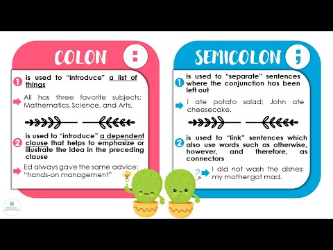
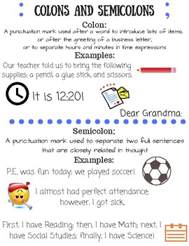

🏺 Week 18 of 35 — Unit 4: Our Past and Present
Unit 4: Our Past and Present | Dates: Jan 17 – Jan 21, 2027 | Week: 3 of 6 | Year week: 18 of 35 |
Class | Sunday | Monday | Tuesday | Wednesday | Thursday |
This week's updates / notes: | RAZ KIDS READING TESTING if not done in Dec. Field Trip to Sheikh Faisal Museum (Monday) | ||||
Morning Meeting | Week #13 SEL Lesson- Click Here 5A- Individual Activity to Whole Group Meeting 5B- One to One Enrichment 5C- Morning Practice | Week #13 SEL Lesson- Click Here 5A- Individual Activity to Whole Group Meeting 5B- One to One Enrichment 5C- Morning Practice | Week #13 SEL Lesson- Click Here 5A- Individual Activity to Whole Group Meeting 5B- One to One Enrichment 5C- Morning Practice | Week #13 SEL Lesson- Click Here 5A- Individual Activity to Whole Group Meeting 5B- One to One Enrichment 5C- Morning Practice | Week #13 SEL Lesson- Click Here 5A- Individual Activity to Whole Group Meeting 5B- One to One Enrichment 5C- Morning Practice |
Vocabulary & Spelling — Word of the Day (G5 + G3) Routine: give the definition first (no guessing) → students share where they might use it, similar/different words. Morphology, examples/non-examples, synonyms/antonyms & more on the vocabulary cards: Vocabulary Padlet (incl. Spelling: words Mon · test Thu) | G5: illuminate — To light up; to make something clear or easier to understand. G3: encounter — To unexpectedly meet or come across something or someone. Unit: imagery — Visually descriptive language that appeals to the senses in writing. | G5: explicit — Stated clearly and in detail, leaving no room for confusion or doubt. G3: pioneer — A person who is among the first to explore or settle a new area, or who develops new ideas or methods. Unit: simile — A figure of speech comparing two unlike things using 'like' or 'as.' ——— Spelling — introduce Week 18 lists (practice all week). Low (Building Spelling Skills, List 18): her, girl, turn, hurt, first, were, card, part, start, are High (Building Spelling Skills, List 18): cinder, circle, cardinal, cereal, cycle, concert, dancer, celebrate, twice, dangerous, strange, ledge, damage, geography, gentle, signal, regular, sugar | G5: annotate — To add notes or comments to a text to explain or highlight information. G3: forge — To create or form something through effort and determination. Unit: etymology — The study of the origin and history of words. | G5: convey — To communicate or express a message, idea, or feeling. G3: widespread — Found or distributed over a large area or among many people. Unit: amazing — Causing great surprise or wonder; remarkably impressive. | G5: coherent — Logical, consistent, and forming a unified whole; easy to follow. G3: custom — A traditional practice or usual way of doing things that is common to a group or place. Unit: idiom — A phrase whose meaning cannot be understood from the individual words alone. ——— Spelling test — Week 18 lists (Low: List 18 · High: List 18). |
READING | Guided Reading: Display posters with text features in class for reference. Introduction to Text Features & Headings. Warm-Up (3 min): Brainstorm: Ask students: "What helps you know what to expect when you read a book with information in it?" Mini-Lesson (10 min): "Today, we're starting a journey to become nonfiction navigators! We will be learning about special tools, called text features, that are included in non-fiction books." Text Feature #1: Headings. Explain: "Headings are like titles for sections of a book. They tell us what that section will be about." Model with examples. Guided Practice (5 min): Non-Fiction Text Feature Scavenger Hunt page 1 — students find one heading, note the page number and purpose, share with group. Closing (2 min): Quick review: "What was the text feature we learned about today? Why are they helpful to authors?" Rotations: SeeSaw Nonfiction Text · Colons Google Classroom/Worksheets: Semicolons/Colons, Boom Cards, RazKids, EPIC, Book Bag, Writing station, Kahoot | Guided Reading: Captions and Labels. Warm-Up (3 min): Review: "Yesterday, we learned about headings. Who can remind me of what headings tell us in a text?" Mini-Lesson (10 min): Refer to page 1 of the flipbook. Text Feature #2: Captions — "the words next to or under a picture, giving us a short explanation of what the picture is about." Text Feature #3: Labels — "point to and name parts of an object." Model with examples. Guided Practice (5 min): Scavenger Hunt — students find at least one caption and one label, record findings and purpose. Closing (2 min): "Who can remind me what we learned about today? What is different about the purpose of a caption and a label?" Rotations: See Sunday's Options Reading: Text Features language if needed — Table of Contents, Keywords/Bold Words, Glossary, Photographs/Illustrations, Captions, Labels, Maps, Headings, Subheadings, Index. | Guided Reading: Bold Print and Table of Contents. Warm-Up (3 min): Quick Review: "What are the text features we've discussed so far, and what is the purpose of each?" Mini-Lesson (10 min): Text Feature #4: Bold Print — "helps to make important words and phrases stand out." Text Feature #5: Table of Contents — "at the beginning of a book, and it shows you what is in the book and what page it's on." Video Clip (2 min): Short YouTube video explaining text features, e.g. this video. Guided Practice (5 min): Index Cards — students find examples of bold print and a table of contents, write page number and purpose. Closing (2 min): "Today, we explored two more important text features. How do bold print and a table of contents help readers?" Rotations: See Sunday's Options | Guided Reading: Applying Our Knowledge - Scavenger Hunt. Warm-Up (2 min): Quick review: "Let's name some of the text features we've learned so far." Mini-Lesson (5 min): Connect the features — students identify any text feature in books at their table; discuss how text features work together to help readers. Independent Practice (10 min): Non-Fiction Text Feature Scavenger Hunt page 2 — students find 4 text features, describe what is on the page, identify the feature, write the page number and purpose. Closing (3 min): Class Discussion: "What have you learned this week about text features?" Rotations: See Sunday's Options | Guided Reading: Review/Catch-up. Rotations: See Sunday's Options |
Assessment | Informal- SeeSaw Assignment. Formative through checking for understanding of text features | Informal- SeeSaw Assignment. Formative through checking for understanding of text features | Informal- SeeSaw Assignment. Formative through checking for understanding of text features | Informal- SeeSaw Assignment. Formative through checking for understanding of text features | Informal- SeeSaw Assignment. Formative through checking for understanding of text features |
Differentiation | Support: Provide books with fewer text features or pre-highlighted sections for students who need more support. Also provide a list of the text features on an index card for student reference. Challenge: Encourage students who need a challenge to use their knowledge to create their own small "informative paragraph" with a heading, label, caption, bold print, and table of contents. | Support: Provide books with fewer text features or pre-highlighted sections for students who need more support. Also provide a list of the text features on an index card for student reference. Challenge: Encourage students who need a challenge to use their knowledge to create their own small "informative paragraph" with a heading, label, caption, bold print, and table of contents. | Support: Provide books with fewer text features or pre-highlighted sections for students who need more support. Also provide a list of the text features on an index card for student reference. Challenge: Encourage students who need a challenge to use their knowledge to create their own small "informative paragraph" with a heading, label, caption, bold print, and table of contents. | Support: Provide books with fewer text features or pre-highlighted sections for students who need more support. Also provide a list of the text features on an index card for student reference. Challenge: Encourage students who need a challenge to use their knowledge to create their own small "informative paragraph" with a heading, label, caption, bold print, and table of contents. | Support: Provide books with fewer text features or pre-highlighted sections for students who need more support. Also provide a list of the text features on an index card for student reference. Challenge: Encourage students who need a challenge to use their knowledge to create their own small "informative paragraph" with a heading, label, caption, bold print, and table of contents. |
GRAMMAR (Sun & Tue) WRITING (Mon & Wed) Thu = catch-up IXL this week: Low: Form and use the irregular past tense: set 1 (G2) High: Form and use the irregular past tense: set 3 (G3) · Change the sentence to future tense (G3) Stretch: Form and use the irregular past tense: set 3 (G4) · Form and use the simple past, present, and future tense (G5) | Grammar (Sun) — More Irregular Past-Tense Verbs OBJ: Expand command of irregular past-tense verb forms Packets — Low (K-1): K: Review — Common and Proper Nouns, G1: Review — SVA and Irregular Verbs · Mid (2-3): G2: Review — Regular and Irregular Past-Tense Verbs, G3: L3.6 Irregular Past — Gave/Flew/Brought/Thought/Wrote, G3: Review: Past-Tense and Future-Tense Verbs · High (4-6): G4: L3.4 Irregular Past — Spoke/Drew/Broke/Caught/Left, G5: L3.1 Regular Verbs — Come/Do/Go, G5: L3.2 Irregular Verbs — Run/See/Sit, G6: L3.1 Tricky Verb Usage History journals: gave shelter, flew south, wrote letters, brought supplies. Grammar anchor charts / resources (from the 2025-26 plan): Grammar: Colons and SemiColons   | Writing — Notes from a second source Review what makes notes "your own words"; students read source 2 (or an Epic nonfiction text on their topic) and add key-word notes to last week's organizer. Grammar link: commas separate items in a list of facts. TWR: comma-in-a-list sentence from jots — three related jots become one sentence with a comma list ("Qatari divers collected pearls, oysters, and shells."). Resources: What is Note-Taking? — Epic Books: Middle East Collection — BrainPOP Jr: Commas with Adjectives and Lists IXL: Detail that does not support (G2) — Organize by topic (G3) — Stretch: G4 — Read graphic organizers (G5) | Grammar (Tue) — Future Tense OBJ: Form future-tense verbs with will/shall; complete past-present-future system Packets — Low (K-1): K: Review: Verbs/Prepositions/Pronouns, G1: Review — Plurals and Suffixes · Mid (2-3): G2: Review — Regular and Irregular Past-Tense Verbs, G3: L3.7 Forming the Future Tense · High (4-6): G4: L3.5 Forming the Future Tense, G4: Review: Future Tense and Tricky Verb Usage, G5: L1.11 Helping Verbs (will/shall as future), G6: L1.12 Helping Verbs (will/shall as future) Completes the three-tense sequence. | Writing — Organize notes into two categories Model sorting mixed notes into two clear categories (e.g., Then/Now or History/Culture); students sort their notes from both sources into two categories, ready to become body paragraphs. TWR: name this the report OUTLINE (a TWR Transition Outline) — two category headings + key-word details; rehearse one category aloud as sentences before Monday's drafting. Differentiation: Low/Med get teacher-pre-labelled categories; High adds a third category if the topic needs it. Resources: Organizing Research Notes | Catch-up day — reteach or extend this week's grammar and writing; finish unfinished drafts; assign this week's IXL practice (links in the left column: Low = reteach, High = consolidate, Stretch = extension). |
MATH Pacing W17 · B6 Ratio W16–W18 | |||||
Objective | Central Learning Outcome: Students will apply their understanding of volume, area, and perimeter to design a functional city layout while meeting specific size requirements and rules. Supporting Outcomes: demonstrate mastery of volume calculations for rectangular prisms; apply area and perimeter concepts; develop spatial reasoning and problem-solving skills; practice following directions and meeting specific criteria for accuracy and creativity. | Central Learning Outcome: Students will apply their understanding of volume, area, and perimeter to design a functional city layout while meeting specific size requirements and rules. Supporting Outcomes: demonstrate mastery of volume calculations for rectangular prisms; apply area and perimeter concepts; develop spatial reasoning and problem-solving skills; practice following directions and meeting specific criteria for accuracy and creativity. | Central Learning Outcome: Students will apply their understanding of volume, area, and perimeter to design a functional city layout while meeting specific size requirements and rules. Supporting Outcomes: demonstrate mastery of volume calculations for rectangular prisms; apply area and perimeter concepts; develop spatial reasoning and problem-solving skills; practice following directions and meeting specific criteria for accuracy and creativity. | Central Learning Outcome: Students will apply their understanding of volume, area, and perimeter to design a functional city layout while meeting specific size requirements and rules. Supporting Outcomes: demonstrate mastery of volume calculations for rectangular prisms; apply area and perimeter concepts; develop spatial reasoning and problem-solving skills; practice following directions and meeting specific criteria for accuracy and creativity. | Field trip day- review catchup if there is time |
Differentiation | Each lesson includes opportunities for partner practice, common misperceptions, independent practice, and a challenge question for differentiation. Provide physical manipulatives (unit cubes). Start with smaller numbers and simpler shapes. Use step-by-step visual guides. Offer partially completed problems. | Each lesson includes opportunities for partner practice, common misperceptions, independent practice, and a challenge question for differentiation. Provide physical manipulatives (unit cubes). Start with smaller numbers and simpler shapes. Use step-by-step visual guides. Offer partially completed problems. | Each lesson includes opportunities for partner practice, common misperceptions, independent practice, and a challenge question for differentiation. Provide physical manipulatives (unit cubes). Start with smaller numbers and simpler shapes. Use step-by-step visual guides. Offer partially completed problems. | Each lesson includes opportunities for partner practice, common misperceptions, independent practice, and a challenge question for differentiation. Provide physical manipulatives (unit cubes). Start with smaller numbers and simpler shapes. Use step-by-step visual guides. Offer partially completed problems. | Field trip day- review catchup if there is time |
EXPLORER 3-day plan (Mon–Wed) The Oil Story IXL this week: Low: Natural Resources (Gr 3, science) · High: Cause and Effect in Informational Texts (Gr 4) Stretch: Costs and Benefits (Gr 4) · Natural Energy Resources: Coal and Wind (Gr 4) | Review / catch-up — revisit last week's Explorer learning; finish unfinished investigations or SeeSaw posts; preview this week's topic. | Mon · Hook + Investigate ▶ Hook video: ‘Dukhan Documentary’ — QatarEnergy (real archival footage; show a 3–4 min segment) Vocab (kept): oil, discovery, cause, effect, jobs, money. Hook (kept): show an oil-rig image — discuss. What changed when oil was found? Objective: Explain that finding oil was a cause that led to major changes (effects) in Qatar. Assessment: Name one thing that changed in Qatar after oil was discovered. Differentiation: Name one change shown in a picture with adult support / name one change with some support / explain cause and effect independently. | Tue · Apply + Record Apply (kept): read ‘How did oil change Qatar?’ and build a cause → effect chart (jobs, schools, hospitals, roads). Reading (Gr 2-3): 'How Oil Changed Qatar' (Grade 2-3 Readings Pack) · Readings Pack — ADD PADLET LINK | Wed · Review + Check Review cause & effect; multiple-choice practice (assessment style). Practice source: Unit 4 Social Studies Assessment (Padlet · Assessments) | Review / catch-up — consolidate Mon–Wed learning; complete recordings/reflections; reteach or extend as needed. |
Closing Circle (SELG) | |||||